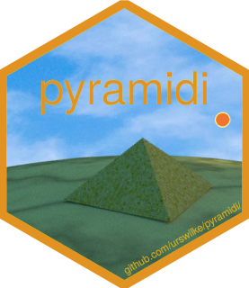

pyramidi 
Introduction
pyramidi is a very experimental package to generate / manipulate midi data from R. Be aware that a lot of the code I’ve written some years ago hurts my eyes when I look at it now :) Midi data is read into dataframes, using the python package miditapyr under the hood (which itself uses the excellent mido). The notes’ midi information (one line per note_on/note_off midi event) is translated into a wide format (one line per note). This format facilitates some manipulations of the notes’ data and also plotting them in piano roll plots. Finally, the modified dataframes can be written back to midi files (again using miditapyr).
Thus, you can manipulate all the intermediate dataframes and create midi files from R. However, you need to make sure yourself that the midi files you write can be understood by your softsynth. The data is not yet validated by pyramidi, but mido (also used to write midi files) already catches some of the possible inconsistencies.
If you’re new to midi, mido’s documentation might be a good start.
New since version 0.2
The midi data can now be
- played live in the R console OR generate a sound file and a html audio player when knitting rmarkdown documents thanks to the excellent R packages fluidsynth (see the documentation of the
play()method in theMidiFramerclass and its helper functionplayer()which use -
fluidsynth::midi_convert()to synthesize midi to wav files (needs fluidsynth installed, but if I understand correctly R will do that for you)
Installation
You can install pyramidi from R-universe with:
install.packages('pyramidi', repos = c('https://urswilke.r-universe.dev', 'https://cloud.r-project.org'))The python package miditapyr also needs to be installed in your python environment used by reticulate.
But if everything works as I believe it should, miditapyr is automatically installed if you install pyramidi, as soon as you access the module for the first time.
Otherwise, you can also install it in your reticulate python environment with the included helper function:
pyramidi::install_miditapyr()I’m not sure if that works on windows too. Perhaps there you have to manually configure your reticulate environment.
Usage
Generate a MidiFramer object
We can create a MidiFramer object by passing the file path to the constructor method (new()).
library(pyramidi)
library(dplyr)
midi_file_string <- system.file("extdata", "test_midi_file.mid", package = "pyramidi")
mfr <- MidiFramer$new(midi_file_string)The object contains the midi data in various dataframe formats and an interface to the miditapyr miditapyr.MidiFrames object mfr$mf. You can write the midi file resulting of the MidiFramer object to disk:
mfr$mf$write_file("/path/to/your/midifile.mid")Modifying midi data
In the MidiFramer object, we can modify mfr$df_notes_wide, the notes in note-wise wide format (note_on & note_off events in the same line). Thus we don’t need to worry which midi events belong together
Let’s look at a small example. We’ll define a function to replace every note with a random midi note between 60 & 71::
mod <- function(dfn, seed) {
n_notes <- sum(!is.na(dfn$note))
dfn %>% mutate(note = ifelse(
!is.na(note),
sample(60:71, n_notes, TRUE),
note
))
}When we call the update_notes_wide() method, the midi data in mfr is updated:
mfr$update_notes_wide(mod)Writing modified midi files
Thus, we can now save the modifications to a midi file:
mfr$mf$write_file("mod_test_midi_file.mid")Synthesizing and playing audio
See the vignette("pyramidi", package = "pyramidi") to see how you can synthesize the midi data to wav, convert to mp3 if you want, and then embed a player in your rmarkdown html document with
mfr$play("mod_test_midi_file.mp3")*The player only appears in the docs.
Even if that sound is very weird, I was very happy not having to listen to the package midi file over and over again. :)
Documentation
You can find the complete online documentation of the package here.
- See the
vignette("pyramidi")for a brief usage introduction how to manipulate midi data. - The
vignette("compose")shows a more extended example how to compose music and generate midi files from scratch. -
vignette("package_workflow")shows in detail the structure of theMidiFramerclass and the functions of the pyramidi package. -
vignette("functions_usage")illustrates the low-level functions of the pyramidi package, thatMidiFramerobjects use under the hood.
pyramidi out in the wild
To see examples where pyramidi is used for midi mangling in R dataframes etc. (amongst plenty other of his awesome writings about music), please check out Matt Crump’s blog and his package midiblender!
Related R packages
- The tabr package is a massive music notation, transcription and analysis program allowing to create musical scores (using Lilypond). It allows to read midi files (wrapping tuneR; see below) and also to export them (also using Lilypond).
- The gm package also allows to create and show musical scores using musescore. It also allows to export the music to audio (also using musescore) and to embed the players in html documents.
- The noon package wraps node.js libraries and can be used to read live midi input port data. I wrote a small blog post how reading a midi port can also be done in R with mido. Interestingly, the node.js libraries and mido rely on a the same C++ library RtMidi.
- The tuneR package can also read in midi data. See the
vignette("tuner"), for an example how you can transform the tuner format into the pyramidi format.
R packages used
This package stands on the shoulders of giants. A big thank you to the authors of the following libraries!
| Package | Version | Citation |
|---|---|---|
| base | 4.3.2 | R Core Team (2023a) |
| details | 0.3.0 | Sidi (2022) |
| DiagrammeR | 1.0.11 | Iannone and Roy (2024) |
| fluidsynth | 1.0.0 | Ooms (2024) |
| glue | 1.7.0 | Hester and Bryan (2024) |
| grateful | 0.2.6 | Rodriguez-Sanchez and Jackson (2023) |
| htmltools | 0.5.7 | Cheng et al. (2023) |
| knitr | 1.45 | Xie (2014); Xie (2015); Xie (2023) |
| pichor | 0.0.0.9030 | Andersen (2024) |
| pkgdown | 2.0.7 | Wickham, Hesselberth, and Salmon (2022) |
| R6 | 2.5.1 | Chang (2021) |
| reticulate | 1.35.0 | Ushey, Allaire, and Tang (2024) |
| rmarkdown | 2.25 | Xie, Allaire, and Grolemund (2018); Xie, Dervieux, and Riederer (2020); Allaire et al. (2023) |
| spelling | 2.2.1 | Ooms and Hester (2023) |
| testthat | 3.2.1 | Wickham (2011) |
| tidyverse | 2.0.0 | Wickham et al. (2019) |
| tools | 4.3.2 | R Core Team (2023b) |
| tuneR | 1.4.6 | Ligges et al. (2023) |
| usethis | 2.2.2 | Wickham et al. (2023) |
| zeallot | 0.1.0 | Teetor (2018) |